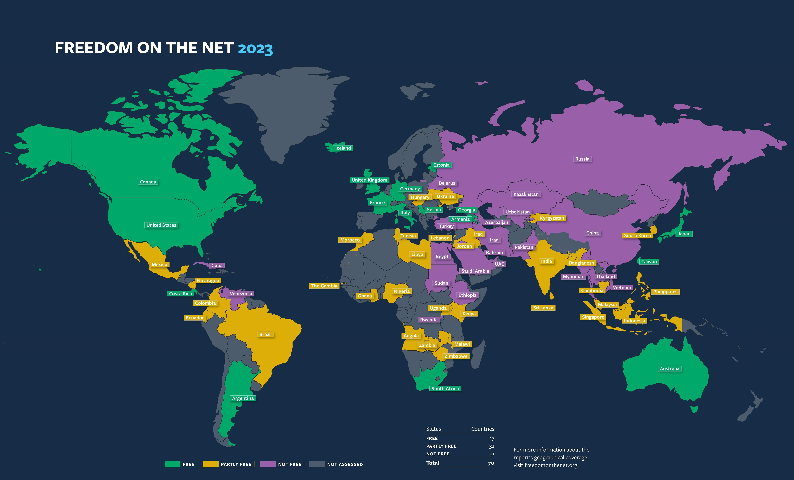

Surveillance Technology
Technology can still be used for detriment towards the people of the Global South, as there are many instances of governments in the Global South misappropriating surveillance technology for personal power instead of their people. The misappropriation of technology is supported. According to Commonweal, many privacy concerns come from extreme surveillance on people through technology as everything from what they say and where they say it can be tracked down. This is done analyzing the surveillance data such as biometrics, social media, and consuming habits such as can be selective such as political targets (Lynch, 2023). The controlled nature of digital surveillance also lead to echo chambers, this is a huge problem as according to freedom house, echo chambers show that it leads to: the lessening of democracies, an example being Russia’s Kremlin, as well as in crackdowns against ethnic and religious minorities, such as the enforcement of role model secular citizens in China with its Tibetan and Uyghur population (Shahbaz, 2018). This issue of surveillance doesn't just affect a few countries but is also a widespread issue of 65 countries throughout the world assed on internet freedom, 26 of them are on an overall decline on freedom with the internet with 23 of them being from the global South (Shahbaz, 2018). This is corroborated with the fact that, according to this journal, around half of African countries do have laws that protect data privacy but they are unenforced and many loop holes exist. Bolstering these policies are seen as unimportant as many lawmakers in the Global South focus on food insecurity and regional conflicts (Jili, 2022). This problem of unnecessary and harmful surveillance is also a waste of resources as a report states that African governments such as Nigeria, Ghana, Morocco, Malawi, and Zambia are spending over 1 billion usd, which could be put to investment for example their citizens welfare, into surveillance technologies which are being used to ignore human rights to privacy (Roberts et al., 2023). As the issue of mass surveillance of people through technology exists in the global south, countries affected by mass surveillance will have a harder time to reach stability and their people will have a lower quality of life. As the integration of technology occurs in the Global South, it represents both significant challenges and unparalleled opportunities, overcoming these obstacles related to social equality and digital literacy can unlock massive potential benefits, including bridging the digital divide and fostering economic growth
Surveillance technology can be used for a positive force in the Global South if used correctly. According to this journal, surveillance of certain groups following proper guidelines can lead to the better protection of national security, an example being the detection of terror suspects found in the horn of Africa with collaboration with the U.S (Jili, 2022). When surveillance technology is used with regulation, it can lead to better security for the Global South. As a whole, the use of technology through invasive surveillance represents one of the biggest obstacles of technology and it's the misuse of it in the Global South. Addressing the issues of surveillance requires a balanced approach that respects privacy and human rights while having the positive potential of surveillance technology for public safety and national security.
references: google document